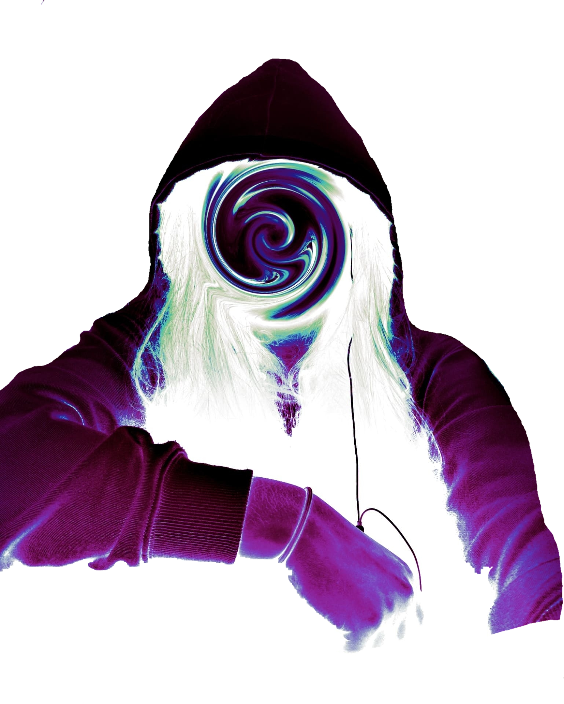

Bora
Bora
((Software Developer)
&&
(Visual Artist))
Freedom is the most sacred thing in life. I can be who I want to be. I am free to be myself without judgment, fear, or shame. In programming, I found freedom. This art lets me create whatever I want and express myself in meaningful ways. I have the world at the top of my fingers, and passion will take me to where I am supposed to be.
I was lost. I did not know where I was going. I allowed society to shape my personality and design my life, accepting that it was my future, my destiny. Freedom is the most sacred thing in life. I can be who I want to be. I am free to be myself without judgment, fear, or shame.
In programming, I found freedom. This art lets me create whatever I want and express myself in meaningful ways. I have the world at the top of my fingers, and passion will take me to where I am supposed to be.